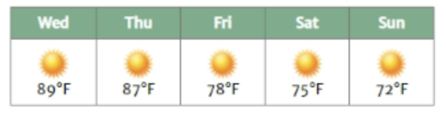

<!DOCTYPE html>
<html lang=en-us>
    <head>
        <meta charset="utf-8">
        <meta name="viewport" content="width=device-width, initial-scale=1, maximum-scale=5">
        <meta name="description" content="The town website for Preston, Idaho">
        <link href="https://fonts.googleapis.com/css?family=Coda+Caption:800|Noto+Serif+SC|Sarabun" rel="stylesheet">
        
        <!--
        
        <link rel="stylesheet" href="css/normalize.css">
        <link rel="stylesheet" href="css/small-5.css">
        <link rel="stylesheet" href="css/large-5.css">
        <title>Town Website of Preston, Idaho | Idaho Info Center</title>
    </head>
    <body>
        <header>
            
            <section class="headings">
                <h1>Idaho Info Center</h1>
                <div class="motto">One Stop for All Your Idaho Information</div>
            </div>
        </header>
        <nav>
            <a class="menu-button" href="#">Menu</a>
            <ul>
                <li><a href="#">Home</a></li>
                <li><a href="#">Preston</a></li>
                <li><a href="#">Soda Springs</a></li>
                <li><a href="#">Fish Haven</a></li>
                <li><a href="#">Storm Center</a></li>
                <li><a href="#">Gallery</a></li>
            </ul>
        </nav>
        <main>
            <h2>
                Preston, Idaho
            </h2>
            <section>
                <h3>
                    Weather Summary
                </h3>
                
            </section>
            <section class="five-day-forecast"> 
                <h3>
                    5 Day Forecast
                </h3>
                
            </section>
            <article>
                <h3>High Winds Hitting Preston This Weekend</h3>
                <h4>Ryan Hirschey</h4>
                <p>
                    Smith was also extremely impressed when Dr. Potts led the pep band through the school, playing the fight song. "I'd never seen a principal do [that] before. It boosted my level of respect," said Smith. "Then [to] have them sing the fight song that last Friday of the first week of school, it was just cool. I noticed one thing, everybody was smiling. Whether they intended to or not, everybody was really happy and excited and [although] I wasn't here last year, that's the kind of thing where you go, 'Whoa, what's going on, there's something different going on.'" 
                </p>
                
                <p>
                    One of the more less-known changes that Principal Joe Potts has implemented is assigning each of the administrators their own advisory class, according to the grade level they currently supervise. Also, a group of teachers worked over the summer to create structed lesson plans for advisory. "We're going to make sure that advisory is meeting the needs of students in every grade level. Speaking about some of his freshman advisory class, Smith said, "So now you're in this new bigger pond that you're looking at what happens next and you can get into the wrong track if you just decide you're going to fail some classes, like, 'I don't like that teacher, I'm going to cut.' Well, guess what, that's going to really throw a wrench into your program. We're trying to get the students to understand that." 
                </p>
                <p>
                    Smith is looking to help instill a little more school spirit in the Freshmen class by making sure they know the Kentlake fight song. 
                </p>
            </article>
            <section>
                <h3>Contact Information</h3>
                
            </section>
        </main>
        <footer>
            <p>
                Content of Footer
            </p>
        </footer>
    </body>
</html>